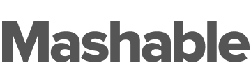

Arun Prasanth
Web developer in love with emotional interfaces.
Quick Intro
Works featured in

.png) 1 Developer, 1 Designer (me) Developer, 1 Designer (me)
2 PMs, 9 Devs, 3 QAs, 1 Designer (me)
4 PMs, 25 Devs, 8 QAs, 6 Designers1 Developer, 1 Designer (me)
2 Devs, 1 Designer (me)
1 PM, 2 Devs, 1 QA, 1 Designer (me)
1 Developer, 1 Designer (me) Developer, 1 Designer (me)
2 PMs, 9 Devs, 3 QAs, 1 Designer (me)
4 PMs, 25 Devs, 8 QAs, 6 Designers1 Developer, 1 Designer (me)
2 Devs, 1 Designer (me)
1 PM, 2 Devs, 1 QA, 1 Designer (me)